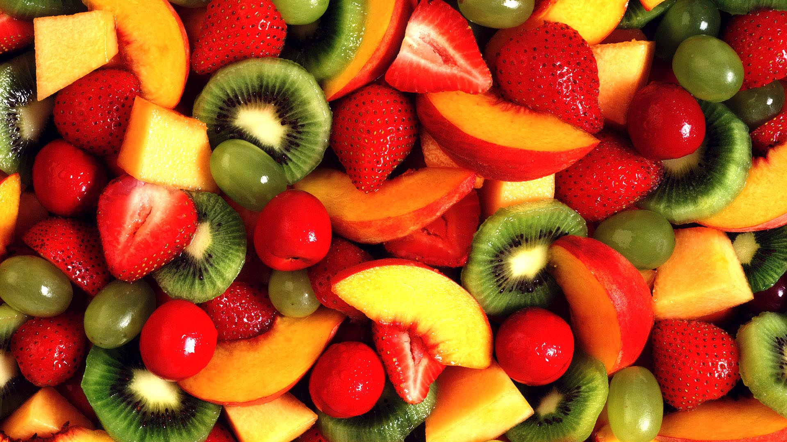

Cooking is an application that you can find the recipe you want. In the meantime, you may use app to know which is the most popular restaurant now! The Cooking Application promote you cooking at home by yourself. Advocating people to stick to your healthy lifestyle. Using this app you can find and download to all manner of copyrighted recipes and nutritional knowledge. It provides a platform for cook and food lovers to communicate, share information and collaborate online. Also you can partake of your exclusive menus and show your finished product.
